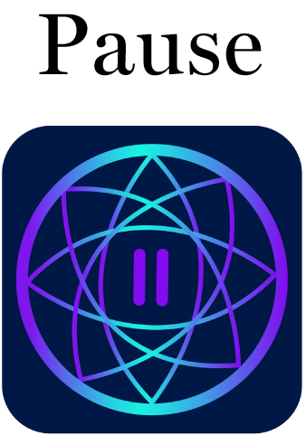

Pause is a mobile web stress relief application that provides a variety of free services to help you relax. Through an interactive quiz, users will be asked questions that will determine how they are doing mentally, if they are dealing with any mental health problems, the app will provide solutions which can help alleviate that problem. We are not licensed doctors, but if you do require professional help please call your local mental health services at 310-6789 or 911.
© 2023 Pause - Style Guide. All rights reserved.
Kana. Hedieh, and Ivona